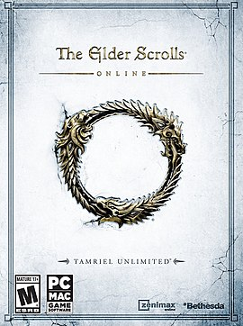
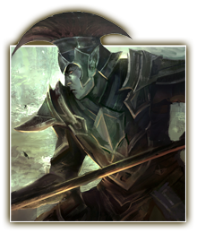
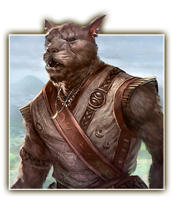
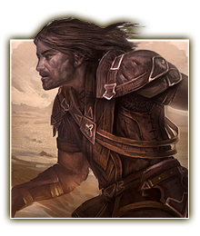
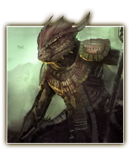
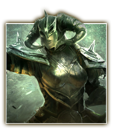
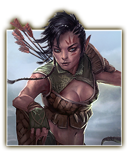

Данмеры
Уроженцы далёкого Моровинда - причудливого края, усеянного вулканами и оросшего лесами из гиганстких грибов.

Каджиты
Уроженцы жаркого Эльсвейра, в котором есть джунгли, саванны и даже пустыни. Являются одной из самых необычных рас Тамриэля.

Бретонцы
Бретонцы составляют большую часть населения Хай рока - самой западной провинции бывшей Второй Империи.

Аргониане
Обитатели болот юго-востока Тамриэля. называют себя Саксхлил на своёём родном языке Джель, или попросту "Народ корня".

Норды
Норды составляют большинство среди народов, населяющих Скайрим. Они являются потомками переселенцев Атмора, расположенного на далёком Севере.

Босмеры
Бойчи являются крупнейшим народом Валенвуда - края на юго-западе Тамриэля. Сами себя часто называют "Народ Древесного сока".